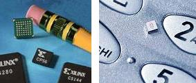
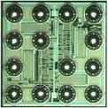
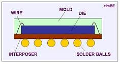
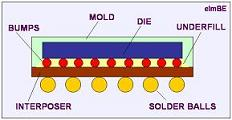

|
Chip Scale
Package (CSP)
Chip Scale
Package,
or
CSP,
based on IPC/JEDEC J-STD-012 definition, is a single-die, direct surface
mountable package
with an area
of no more than 1.2 X the original die area. The acronym 'CSP'
used to stand for 'Chip Size Package,' but very few packages are in fact
the size of the chip, hence the wider definition released by IPC/JEDEC.
The IPC/JEDEC
definition likewise doesn't define how a chip scale package is to be constructed, so
any package that meets the surface mountability and dimensional
requirements of the definition is a CSP, regardless of structure.
For this reason, CSP's come in many forms - flip-chip, non-flip-chip,
wire-bonded, ball grid array, leaded, etc.
Because of
this variety of chip scale packages developed in the industry, one can not make any
generalized assumptions on the manufacturability or reliability of the
CSP as a homogeneous package group. It is often necessary to
determine what the structure of the CSP is before any conclusion on its
robustness or manufacturability can be made.
|
 |
Figure 1.
Small size is the main advantage of CSP's. Note how Xilinx
and Philips used a pencil (left) and a cell phone key pad
(right), respectively, to illustrate this. |
In an effort
to systematically characterize the CSP as a package group, some quarters
have come up with four (4) classifications or types for the CSP.
These are: 1) the flex circuit interposer type; 2) the rigid substrate
interposer type; 3) the custom leadframe type; and 4) the
wafer-level
assembly type.
The
advantages offered by chip scale packages include smaller size (reduced footprint and
thickness), lesser weight, relatively easier assembly process, lower
over-all production costs, and improvement in electrical performance.
CSP's are also tolerant of die size changes, since a reduced die size
can still be accommodated by the interposer design without changing the
CSP's footprint.
Chip scale packaging can
combine the strengths of various packaging technologies, such as the
size and performance advantage of bare die assembly and the reliability
of encapsulated devices. The significant size and weight reduction
offered by the CSP makes it ideal for use in mobile devices like cell
phones, laptops, palmtops, and digital cameras.

Figure 2.
Example of a Wafer-Level CSP from Maxim;
note the bumps on the die
CSP's are generally built
using a lead frame, wherein many devices can be contained on the same
substrate, allowing the assembly of many packages in bulk. Doing
so maximizes the use of interposer area.
A typical
chip scale packaging process
starts with the mounting of the die on the interposer using epoxy,
usually of non-conductive type (although conductive epoxy is also used
when the die backside needs to be connected to the circuit). The
die is then wirebonded to the interposer using gold or aluminum wires.
Wirebond profiles must be as low and as close to the die as possible in
order to minimize package size.
Plastic encapsulation to protect
the die and wires then follows, usually by transfer molding. After
encapsulation, solder balls are attached to the bottom side of the
interposer, after which the package is marked. Finally, the parts are
singulated from the leadframe.

Figure
3. Cross-section of a Wirebonded CSP

Figure
4. Cross-section of a Flip-chip CSP
The chip
scale package is relatively new, so industry standards for producing
CSP's have not yet been completely developed. Nonetheless, the Institute
for Interconnecting and Packaging Electronic Circuits (IPC) has already
released J-STD-012, "Implementation of Flip Chip and Chip Scale
Technology." This document discusses technology overview and
design considerations, as well as material, processing, mounting,
interconnection, reliability, and standardization aspects of CSP
manufacturing.
The industry
is moving towards the development of more chip scale packaging
standards. Some of the new standards being developed as of this
writing are, in fact, defined by J-STD-012. These standards are
shown in Table 1.
Table 1.
Flip Chip and CSP Standards Currently Undergoing Development
|
Std No.
102 |
Mechanical outline Standard for Flip Chip or Chip Scale
Configurations |
|
Std No.
103 |
Performance Standard for Flip Chip/Chip Scale Bumps |
|
Std No.
104 |
Test
Methods for Flip Chip or Chip Scale Performance |
|
Std No.
105 |
Flip
Chip/Chip Scale Carrier Tray Standard |
|
Std No.
106 |
Bare Dice
as Flip Chip or Chip Scale Configuration Management Standard |
|
Std No.
107 |
Design
Standard for Flip Chip and Chip Scale Mounting Structures |
|
Std No.
111 |
Design
Standard for Flip Chip/Chip Scale Assembly Configuration |
|
Std No.
112 |
Standard
for Flip Chip/Chip Scale Assembly Performance Requirements |
|
Std No.
113 |
Test
Methods for Qualification and Evaluation of Flip Chip/Chip Scale
Assemblies |
|
Std No.
114 |
Standard
for Flip Chip/Chip Scale Assembly Rework and Repair Techniques |
|
Std No.
115 |
Flip
Chip/Chip Scale Assembly Reliability Standard |
|
Std No.
120 |
Qualification and Performance Standard for Flux used in Flip Chip
Assembly |
See Also:
Wafer
Backgrind;
Die
Preparation;
Die Attach;
Wirebonding;
Molding;
Wafer-level Packaging; Flip Chip
Assembly; BGA;
IC
Manufacturing;
Assembly Equipment
HOME
Copyright
© 2004
www.EESemi.com.
All Rights Reserved.
|